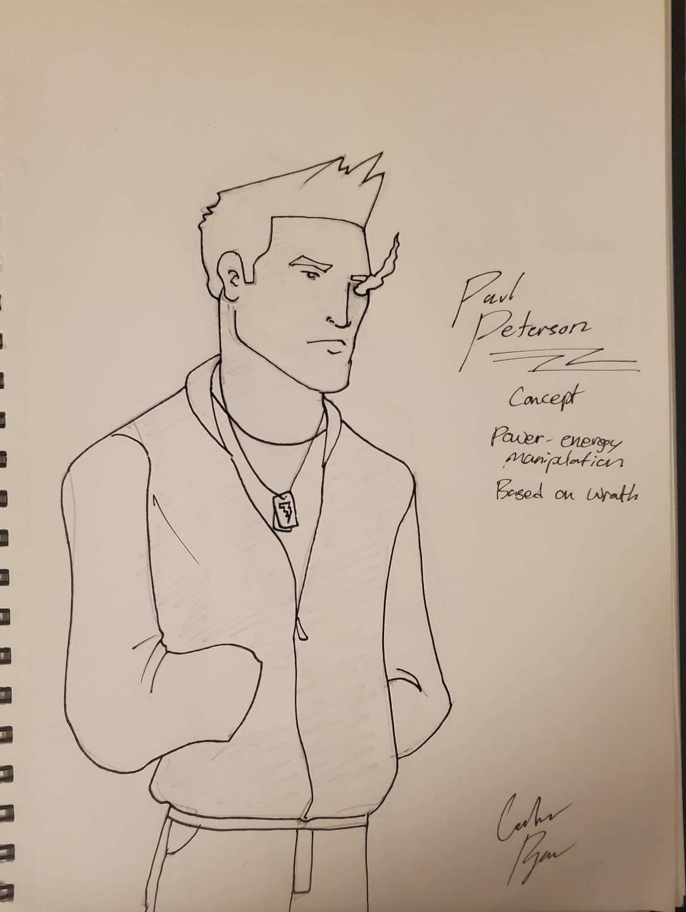

Now, you're probably thinking I'm just terrible at naming things but this time it's intentional. The Turbosquad is a group of highschool friends turned superhero group. They become friends while all in detention and then band together to use their gifts for good in this gripping and heartwarming adventure. As they topple crime lords, grapple with good and evil within themselves, and sacrifice for the greater good we learn that friendship means a lot more than being buddies.
Gameplay wise this is my attempt at making a fighting game. Fighting games are incredibly complex and very fun to me. I regularly play smash bros and I wanted to create something with the same imagination as that game but on a smaller scale. The gimmick I want to introduce is something called “Turbo Mode” which sounds like a regular special attack, but really changes the entire way your character works. Each character has two different movesets: “Platforming" and Street fighting”. This mechanic allows you to switch up your moveset depending on different circumstances. If you are in an advantageous state you'll want to switch to street mode allowing for better combo chains, if you're in disadvantage you'll want to switch to platform mode so you can run and jump away from your opponent.
This is a project I know will take a lot of time and precision but that's why my goals aren't to rush out any projects but to really take the time, put in the effort, and make something quality. I hope a game like this can encourage people to reinvent big fighting games.